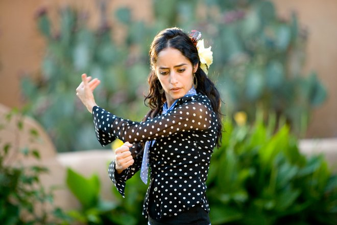
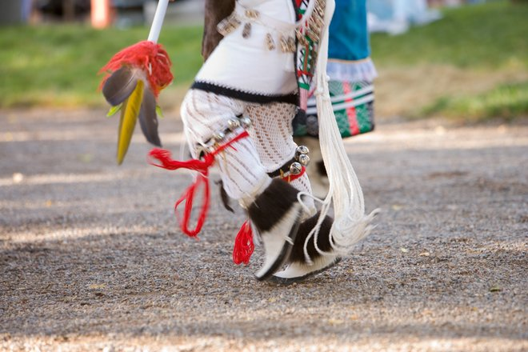
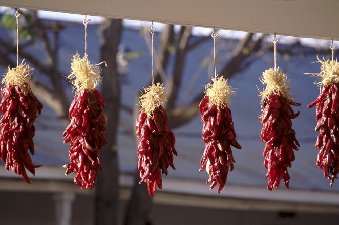

Culture & Heritage
Albuquerque is recognized as one of the most culturally diverse cities in the country. Its ethnic tapestry is reflected in its architecture, art, cultural centers and cuisine. Countless customs and traditions that have been passed down over generations are a vibrant part of daily life in the city, making Albuquerque an epicenter of authentic Southwestern culture.

Albuquerque is home to more than the Native American, Hispanic and Latino cultures for which New Mexico is well known. Our multicultural city includes African American, Asian, Middle Eastern and many other diverse communities, creating a unique and modern Southwestern blend. In fact, more than 70 different ethnicities call Albuquerque home.

There is no shortage of ways to discover the many different facets of New Mexican culture and heritage. Visiting one of our many museums or cultural centers will bring the past alive, offering insight into our traditions. At events such as art fairs, music festivals or Native American dances, you will rub shoulders with locals and understand what makes our city tick. You can take excursions to see ancient cliff dwellings or petroglyphs. Doing so will take only hours out of your day, but will introduce you to millennia of history. New Mexico's lands are full of discoveries: fascinating cultures, extraordinary landscapes, intriguing ruins, recreational opportunities, and arts and crafts made by people who are proud of their legacies and traditions.

Albuquerque's one-of-a-kind Southwestern culture is in everything around you, from the city's quaint shops and Pueblo- and Spanish-inspired architecture to our world-famous cuisine, music and art. In every way possible, the past seamlessly weaves through the fabric of present-day Albuquerque, making it a truly culturally rich American destination.